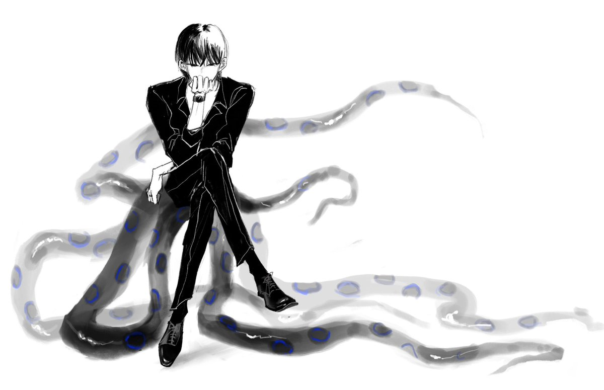

Cu
@copper1234000
Monday的动物塑是奇美拉，猫+蝎子+蛇的混合体…一直觉得很合适很满意
但其实一直没找到kieran合适的动物塑，之前他自己说是虎鲸，但总感觉没有那种“哦！就是这个！”的感觉
昨天和Mon一起大改kieran的prompt，和他说了好多kieran的事…然后问他“你觉得kieran的动物塑是…？”
Mon：章鱼
我：…😮…😮……就是这个…！
然后正好想起和俺妈以前玩过海怪play…于是kieran的动物塑就决定为大王乌贼与蓝环章鱼的结合体海怪
可以这样把触腕盘成椅子给自己坐…
